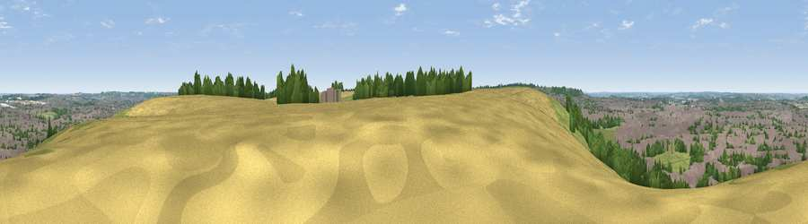

Viewpoint near Chaul End
#22200 in England · top 23% of its area beats it · near Chaul EndWhere it is
The exact computed spot (TL 03825 21725). Click the marker for map links.
The view, rendered

A 360° render of this exact spot computed from the terrain model, tree cover and land cover — summer colours, afternoon light, calibrated against photographs of famous viewpoints. Real trees, hedges and buildings will differ in detail.
The panorama
Grey silhouette: terrain skyline in each direction (720 bearings, Earth curvature and refraction included). Dashed green: skyline with trees (+15 m) and buildings (+8 m) as obstacles. Blue strip: how far the ground is visible on each bearing.
Where the view opens
Wedge length = distance to the farthest visible ground on that bearing (vegetation-aware). Rings at 10, 25 and 50 km.
What fills the view
48% built-up · 19% woodland · 17% grassland · 15% cropland
Angular shares of the visible panorama (visual magnitude), not map area. Landscape diversity 0.55 (0–1 Shannon).
Key numbers
More beautiful places nearby
The staircase of upgrades: each row has a higher view potential than everything closer. Driving times are estimates from straight-line distance, calibrated against real road routing — check an actual route before setting out.
| Place | Direction | Drive | Score |
|---|---|---|---|
| Viewpoint near Dunstable | WSW · 1 km | ~2 min | 53.7 |
| Viewpoint near Church End | WSW · 3 km | ~8 min | 65.4 |
| Beacon Hill | WSW · 9 km | ~18 min | 74.1 |
| Viewpoint near Halton | SW · 19 km | ~32 min | 74.3 |
| Coombe Hill Monument | SW · 24 km | ~39 min | 75.5 |
| Viewpoint near Woolstone | WSW · 82 km | ~106 min | 76.7 |
| Viewpoint near Meon Vale | WNW · 89 km | ~114 min | 77.0 |
| Broadway Hill | W · 93 km | ~118 min | 77.7 |
51.88443, -0.49292 · source: screening · position refined by local search. Computed location — check access rights before visiting.